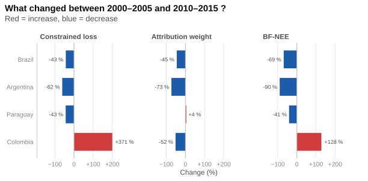

Case study: South America
Brazil, Argentina, Paraguay and Colombia – where German demand is linked to the loss of natural ecosystems, and why it changes
Plantations no longer count as natural (v3.1, approximation). Plantations (IUCN 14.3) and artificial aquatic classes are now treated as anthropogenic. Until the full pipeline can be rerun, natural ecosystem loss and BF-NEE are derived from the v3 results by removing these classes; the exact values lie between the values shown and the v3 values (Method). The interactive map still shows the v3 values.
South America was the main hotspot of the footprint during the soy and cattle boom of the early 2000s. This page compares four producing countries in which German demand is linked to the loss of natural ecosystems in very different ways. It is the online version of the case study in the public monitoring report; all numbers are calculated from the tables of this website.
4,760 km²
BF-NEE in South America 2000–2005
38% of the global footprint
1,240 km²
BF-NEE in South America 2010–2015
18% of the global footprint
+128%
Colombia 2000–2005 → 2010–2015
the only rising footprint among the four
South America in the global footprint
In 2000–2005 the region accounted for 4,760 km², or 38% of the footprint of German final demand; by 2010–2015 this had fallen to 1,240 km² (18%). Values for 1995–2000 are shown for completeness but are subject to larger uncertainties in the input data, so trends are described from 2000–2005 onwards.
Which ecosystems are lost?
Less conversion or less trade?
BF-NEE changes for two reasons: how much natural land is converted for agriculture in the producing country (agriculture-constrained loss), and how much of that country’s production is linked to German final demand (the attribution weight, BF-NEE ÷ constrained loss). The figure separates the two.

Four countries, four stories
Brazil – rising again after 2010, and moving into savannas. After a low in 2005–2010 (236 km²), the footprint rose to 736 km² in 2010–2015, because cropland expansion more than tripled and a larger share of production was linked to German demand. Savannas (58%) and shrublands (16%) now dominate; forests account for 12%. Oil-bearing crops carry 54% of the footprint.
Argentina – strongest decline. The footprint fell by 90% compared with 2000–2005, as both conversion (−62%, mainly less pasture expansion) and the share of production linked to Germany (−73%) decreased.
Paraguay – less conversion, but from forests to shrublands. The footprint fell by 41% because less land was converted, while the trade link to Germany remained stable. The forest share dropped from 70% to 33%, shrublands rose to 33%; oil-bearing crops carry 74% of the footprint.
Colombia – the only rising footprint. It more than doubled (+128%) because conversion grew almost fivefold, driven by the expansion of intensive pasture (from 4,060 km² to 22.1k km²), mostly at the expense of forests (68%).
Which products?
Why this matters for policy
Progress towards target 21.1 of the German National Biodiversity Strategy 2030 – reducing the negative impacts of global supply chains on biodiversity – is currently considered not measurable. BF-NEE can close this gap: it shows where, in which ecosystems and through which products German consumption is linked to the loss of natural ecosystems, and whether changes result from less conversion on the ground or from shifts in trade. The South American cases show that both drivers matter and can point in opposite directions. Because savannas, shrublands and grasslands account for a large part of the footprint in Brazil and Paraguay, a forest-only view – as in the EU Deforestation Regulation – misses much of it.
Data
Constrained loss = natural ecosystem loss that coincides with agricultural expansion in the same grid cell and period. Attribution weight = BF-NEE ÷ constrained loss, i.e. the share of the loss linked to German final demand through the commodities grown on the new land.